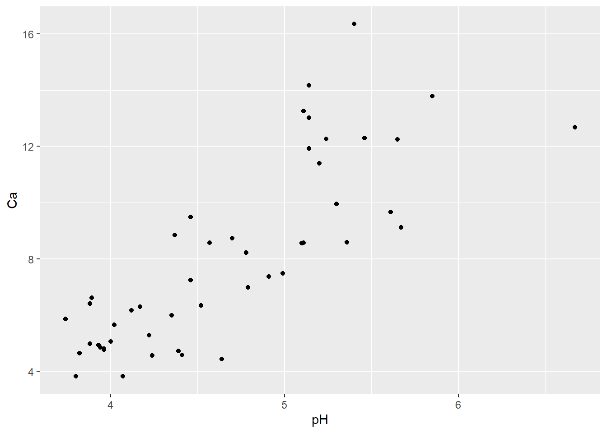

NOTE: Jonathan Greenberg (https://naes.unr.edu/gears/) developed this module
This is the first of the modules that really go beyond the basics. Module 2.5 also provides a “whirlwhind” tour of more advanced things you can do in R, from parallel computing, to sophisticated visualizations to geographic analysis.
Click here to download the script! Save the script to a convenient folder on your laptop. [alternative: load Jonathan’s original script]
Load your script in RStudio. To do this, open RStudio and click on the folder icon in the toolbar.
Let’s get started with parallel processing in R!
This is a huge topic, but the basic concept of parallel computing is the following:
Given some problem X that can be divided into subproblems x1, x2, x3, each subproblem can be sent to a different “worker” processor (which may be located on a different physical computer).
Each processor then sends the results of its subproblem back to a central “master”. The master often then pieces the subproblems back together to return to the user.
Parallel computing is not a cure-all, and not all problems will benefit from it. We’ll come back to this issue in a bit.
There are a lot of packages to realize parallel computing within R, and current versions of R even come with some parallel computing packages built-in. A full list can be found here.
I will be following the examples from http://trg.apbionet.org/euasiagrid/docs/parallelR.notes.pdf.
First, let’s set up our workspace to run an example using a genomics data set. This example uses bioconductor, which provides tools for the analysis and comprehension of high-throughput genomic data. Bioconductor uses R and is open source and open development.
Installing the packages for this module can take a while, so hopefully you have already had a chance to do this prior to coming to this workshop!
################
# Set up the workspace (can take a surprisingly long time!)
# examples from http://trg.apbionet.org/euasiagrid/docs/parallelR.notes.pdf
# First, load this script directly from the web (which also installs required packages for you!):
if (!requireNamespace("BiocManager", quietly = TRUE))
install.packages("BiocManager")
BiocManager::install("Biobase")NOTE: if you had trouble running the above code, you can just load the example dataset here
We are going to run a test using gene expression data– let’s load the example dataset!
data(geneData, package = "Biobase") # load example data from Biobase package between all pairs of genes across all samples.
# geneData <- read.csv("geneData.csv") # alternative!
# This data represents 500 genes (organized by rows)
# with expression data (numerical).
# The goal is to calculate the correlation coefficient
# between all pairs of genes across all samples. For example,
# to test gene 12 vs 13:This data represents 500 genes (organized by rows) with expression data (numerical) across 26 samples. The goal is to calculate the correlation coefficient between all pairs of genes across all samples.
For example, let’s examine the correlation between gene 12 vs 13:
?cor # view help page for "cor()" function
geneData[12,]
geneData[13,]plot(geneData[12,],geneData[13,]) # plot the correlation between two genes
cor(geneData[12,],geneData[13,])## [1] 0.548477The total number of paired correlations will be 500 x 499 / 2 = 124,750 correlations!
We can identify all combinations in a vector using the "combn() function:
?combn # function to determine all combination idsWe are going to leave this as a list, for now…
pair <- combn(1:nrow(geneData),2,simplify=F) #leave this as a list, for now...
length(pair)## [1] 124750head(pair,n=3) # note that the "head()" and "tail()" functions can be used on lists in addition to data frames...## [[1]]
## [1] 1 2
##
## [[2]]
## [1] 1 3
##
## [[3]]
## [1] 1 4tail(pair,n=3)## [[1]]
## [1] 498 499
##
## [[2]]
## [1] 498 500
##
## [[3]]
## [1] 499 500It often makes sense to break a problem like this down a set of repeated tasks, each of which is expressed as a function.
Let’s write (and test) a function to accept a pair in the database and returns the correlation:
############
# New function: accepts a gene pair and the database as arguments and returns
# the correlation:
geneCor <- function(pair,gene=geneData){
cor(gene[pair[1],],gene[pair[2],])
}
# Test the function:
cor(geneData[12,],geneData[13,])## [1] 0.548477geneCor(pair=c(12,13),gene=geneData) # should be the same result as the previous command...## [1] 0.548477We left our pairs as a list, so we can use lapply! Recall that lapply takes each element in a list (in sequence), applies a specified function to that element, and returns the results from the function in another list.
Let’s just test the first 3 pairs:
########
# use "lapply" to run our function on the first three gene pairs
pair[1:3]## [[1]]
## [1] 1 2
##
## [[2]]
## [1] 1 3
##
## [[3]]
## [1] 1 4outcor <- lapply(pair[1:3],geneCor)
outcor## [[1]]
## [1] 0.1536158
##
## [[2]]
## [1] 0.7066034
##
## [[3]]
## [1] -0.2125437Now let’s do the whole calculation. First, open your task manager by hitting control-alt-delete (on Windows) and choosing “Start Task Manager”.
Click the “Performance” tab. You may also need to click on another link to open the “Resource Monitor”. Notice you have a few graphs next to “CPU Usage”, which shows each processor you have on your machine.
Type the following in R and watch the CPU Usage History graph. Note the use of the “system.time()” function, which allows us to keep track of processing time for one or more R commands. Processing time can vary substantially among machines.
#################
# Examine processor use and speed
# First, open your task manager to view processor usage (see website for more details).
system.time(outcor <- lapply(pair,geneCor))## user system elapsed
## 3.61 0.00 3.61# Notice ONE CPU spiked. Make note of how long it took to run.Notice ONE CPU spiked. Make note of how long it took to run.
Now let’s make an even bigger dataset (just repeating geneData four times), making 26 x 4 = 104 columns:
fakeData <- cbind(geneData,geneData,geneData,geneData) # make an even bigger dataset!Now lets make a more complex, computationally intensive function that calculates the 95% confidence intervals of the correlation coefficients through a process of bootstrapping:
###########
# New, more complex function that generates bootstrap confidence intervals for correlation coefficients
library(boot) # load the "boot" library for performing bootstrapping analysis
# 'x' represents vector with two elements, indicating the pair of genes to compare
# 'gene' represents a gene expression database
geneCor2 <- function(x, gene = fakeData){
mydata <- cbind(gene[x[1], ], gene[x[2], ]) # extract the rows (genes) to compare
mycor <- function(x, i) cor(x[i,1], x[i,2]) # function (correlation) to perform bootstrap analysis with
boot.out <- boot(mydata, mycor, 1000) # perform bootstrap analysis (1000 iterations)
boot.ci(boot.out, type = "bca")$bca[4:5] # extract and return the bootstrap confidence interval
}How long would it take to run correlation analyses using this new function for just 10 gene pairs?
# Test how long 10 pairs would take:
genCor2_system_time <- system.time(outcor <- lapply(pair[1:10],geneCor2))
genCor2_system_time["elapsed"] ## elapsed
## 0.82What did you get? On my machine this operation (for 10 pairs) took around 1 second…
Let’s use this information to estimate how long it will take to run this for the all pairs! How many pairs were there again?
length(pair) # how many pairs were there again?## [1] 124750Okay, so there are 124,750 pairs… So let’s figure out how long 124,750 pairs will take:
############
# estimate time to run 124,750 pairs
genCor2_system_time["elapsed"] # time it took to run 10 pairs, in seconds## elapsed
## 0.82genCor2_system_time["elapsed"] *(124750/10) # time it would take to run 124750 pairs, in seconds ## elapsed
## 10229.5genCor2_system_time["elapsed"] *(124750/10/60/60) # in hours...## elapsed
## 2.841528Ouch! This is a good candidate for parallel processing!
Let’s take a subsample of all the pairs for exploring this further:
###########
# Explore parallel processing vs sequential processing
pair2 <- sample(pair,300) # first extract a subsamble of all the pairsThe opposite of parallel processing is “sequential processing”. Let’s first test a sequential version of this task:
# Let's test a sequential version of this:
system.time(outcor <- lapply(pair2,geneCor2))## user system elapsed
## 21.95 0.35 22.30# Note the elapsed time.Now, we can explore implementing this operation in parallel. To do this, we will use the “parallel” package in R.
Parallel’s basic concept is to launch “worker” instances of R on other processors, and then send the subproblems to each R instance. This means that if you want to use 4 processors (“cores”), after you start a parallel cluster, you will have 5 copies of R running: the master copy (the one you are typing into) and 4 worker copies.
The “cluster” of processors can be either a single computer with multiple processors (like the one you are working on), or a network of computers linked by some clustering framework.
The basic order of operations with using ‘parallel’ is as follows: 1. library(“parallel”)
2. Make a parallel cluster using makeCluster(…)
3. Load packages that your function needs into the workers using clusterEvalQ(cl=…,library(…))
4. Load objects (data) from the master environment into the worker environments using clusterExport(cl=…)
5. Following basic lapply() semantics, use e.g. clusterApplyLB(cl=…) to apply your function to an input list, where each iteration of the “loop” will be sent to an available processor. The output is usually a list.
6. Shut down your cluster using stopCluster(…)
So the first step is to load the ‘parallel’ package:
###########
# Run this operation in parallel!!
### parallel: built-in parallel computation package.
library("parallel") # load the package (comes with basic R installation)We’re also going to grab the “future” package for later use:
install.packages("future") # install "future" package, which we will use laterlibrary("future")The way parallel works, is we first have to make an R cluster via “makeCluster()”:
?makeCluster # learn more about "makeCluster()"We are going to create a cluster with 4 cpus of type “PSOCK”.
Click the task manager “Processes” (Windows) or Activity Monitor (mac), and scroll down to the “R”s:
########
# Make a cluster
myCluster <- parallel::makeCluster(spec=4,type="PSOCK") # make cluster with 4 cpus of type "PSOCK"
myCluster## socket cluster with 4 nodes on host 'localhost'length(myCluster) # One entry per "worker".## [1] 4myCluster[[1]] # more info about this "worker"## node of a socket cluster on host 'localhost' with pid 3172Notice you now have multiple instances of Rscript.exe running now!
We can stop the cluster by using the “stopCluster()” function:
?stopClusterparallel::stopCluster(myCluster)Now let’s make a new cluster using all available cores.
######
# Make a cluster with all available cores
mycorenum <- availableCores() # determine number of available cores
myCluster <- parallel::makeCluster(spec=mycorenum,type="PSOCK")We can send the same function to each node (worker) in the cluster using “clusterCall()”:
######
# Run a function on each cluster:
?clusterCall # clustercall(): sends the same function to each node (worker) in the clusterFor example, we might run the “date()” function on each cluster! Note that the results get returned as lists:
date() # run the "date()" function## [1] "Fri Sep 17 14:55:12 2021"workerDates <- parallel::clusterCall(cl=myCluster,fun=date) # now try running the "date()" function on all clusters
class(workerDates)## [1] "list"length(workerDates) # One list element per worker.## [1] 4You need to remember that each worker instance of R that is running is essentially “empty” – it won’t, be default, have access to the environment of the master. Thus, we need to send some commands/data to them in anticipation of running the code.
For example, the “search()” function tells us what packages and data are loaded (attached). Let’s explore what packages are loaded in our worker environments:
####
# explore packages loaded in our worker environments
search() # packages loaded in global environment
workerPackages <- parallel::clusterCall(cl=myCluster,fun=search) # .. and worker environments
# workerPackagesWe are using a package called “boot” in our function, so we need to load up this package on every worker using the “clusterEvalQ()” function:
#########
# load required packages on every worker:
?clusterEvalQloadOnCls <- parallel::clusterEvalQ(cl=myCluster,library("boot")) # We can confirm the boot package is now loaded:
parallel::clusterCall(cl=myCluster,fun=search)Next, we will export the dataset “fakeData” to each worker using the “clusterExport()” function.
First, look at the worker Rs and note how much memory they are using (in task manager).
########
# Load required data on every worker
?clusterExportloadData <- parallel::clusterExport(cl=myCluster,"fakeData")parallel::clusterEvalQ(cl=myCluster,ls()) # Check the environment on each worker- make sure data are loadedCheck the memory now. Note that each worker is using more memory, since we loaded the fakeData into each of those worker Rs.
Note we could send the entire Global environment over to the workers! To do this, we could use the “ls()” function:
#### alternatively, load all data in our environment into each worker:
# loadData <- parallel::clusterExport(cl=myCluster,ls())# parallel::clusterEvalQ(cl=myCluster,ls())Now comes the actual function call. To do this, we use the “clusterApplyLB()” function:
############
# Spread function calls across workers using an "lapply"-like function
?clusterApplyLB # function for performing the actual function callThis is VERY similar to an ‘lapply’ statement, except we identify the cluster to send the command to. Let’s call the “geneCor2()” function for each gene pair, using parallel processing. We can compare the speed of the parallel vs sequential processing using the “system.time()” function.
Let’s call the “geneCor2()” function for each gene pair, using parallel processing!
Watch your Performance tab as your cores light up:
#######
# Call the "geneCor2()" function for each gene pair, using parallel processing
system.time(outcor2 <- parallel::clusterApplyLB(cl=myCluster,pair2,geneCor2)) ## user system elapsed
## 0.14 0.02 6.09# vs the non-clustered version:
system.time(outcor <- lapply(pair2,geneCor2)) # takes much longer!## user system elapsed
## 22.19 0.08 22.26We got a big performance boost here!
Don’t forget to shut down your cluster:
stopCluster(myCluster) # finally, stop the cluster..There are multiple parallel “backends” to R, including ‘parallel’, ‘snow’, ‘multicore’, ‘Rmpi’, to name a few.
‘foreach’ is a meta-wrapper that works on many parallel backends. What this means is you can write one set of code, and not have to modify it if the user prefers to use Rmpi instead of parallel (in which case the commands are very different).
The basic order of ops with using ‘foreach’ is as follows:
##########
# Parallel processing using 'foreach'
install.packages("foreach")
# Install the parallel backend to foreach:
install.packages("doParallel")library("foreach")## Warning: package 'foreach' was built under R version 4.1.1library("doParallel")## Warning: package 'doParallel' was built under R version 4.1.1## Loading required package: iterators## Warning: package 'iterators' was built under R version 4.1.1?foreachTry running in sequential mode…
# sequential mode:
registerDoSEQ() # Avoids warnings
system.time(
outcor <- foreach(
p = pair2,
.packages="boot",
.combine="rbind") %dopar% {
return(geneCor2(p))
}
)## user system elapsed
## 22.48 0.11 22.60And now with a parallel backend!
# Parallel mode (use a parallel backend):
# Create a cluster using parallel:
myCluster <- makeCluster(spec=4,type="PSOCK")# Register the backend with foreach (doParallel):
registerDoParallel(myCluster)
# Run our code! Notice I didn't change the foreach call at all:
system.time(
outcor <- foreach(
p = pair2,
.packages="boot",
.combine="rbind") %dopar% {
return(geneCor2(p))
}
)## user system elapsed
## 0.09 0.01 6.07Some things to notice:
- we explicitly define what packages are to be sent over using the .packages parameter
- foreach calls have access to the master’s global environment. - we can use specific functions to join the data once its done (e.g. rbind)
Don’t forget to stop the cluster:
stopCluster(myCluster) # Don't forget to stop the cluster:You should also register the default, non-parallel backend for ‘foreach’. Otherwise the next time you use ‘foreach’ it will not work.
registerDoSEQ() # register the default, non-parallel backend for foreachParallel computing, optimally, should be linear in terms of number of processors vs. time. However, this is never the case. A process running on one core does not take twice the time as a process running on two cores. There are losses along the way from various sources. These need to be thought about when writing the most efficient code.
First, many programs will have parallel and non-parallel components. If your non-parallel components take X amount of time, no matter how many processors you have available, you will never run faster than X amount of time.
Chunking is one of the most important considerations. So far, we’ve been iterating one “row” at a time. For faster computations, this may not be very efficient, as the overhead of sending/receiving/managing the parallel cluster swamps out gains from the processing. We can get more clever with this by sending MULTIPLE rows at one time to a worker. This optimization of the chunk size (number of rows to send at one time to a single worker) can dramatically speed up your computation, at the cost of heavier RAM usage.
RACE CONDITIONS. This comes in to play if your workers are all writing to the same output file (say, a raster file). As we discussed before, in general only one “thread” (worker) can write to a file at a time, otherwise the file may get corrupt. In parallel computing, we can increase the chance that this might happen if we aren’t careful. This often requires a programmer to be able to “lock” a file – i.e. before a worker tries to write to a file, it 1) checks if the file is “locked”, 2) if it finds it unlocked it first locks the file itself, 3) it opens/writes/close to the file, 4) it unlocks the file for other workers.
Embarrassingly parallel applications and those that aren’t: the term “embarrassingly parallel” refers to problems that are absolutely trivial to parallelize. The function we’ve been looking at is embarassingly parallel. Each iteration takes (basically) the same amount of time, uses the same amount of memory, doesn’t require cross-talk between workers, etc. Raster processing, as we will see, is often an embarrassingly parallel problem – we process an image one line at a time, sending each line to a different processor.
Vector based processing, on the other hand, is often not embarrassingly parallel, and takes a lot more thought to properly parallelize a function.
Parallel computing takes a lot of practice and understanding of the underlying systems to get good at. Other issues start popping up such as load balancing (what if the functions take non-constant amounts of time on each processor), optimization of the chunk size, and a host of other issues.
Debugging can also be tricky, as the various parallel backends do not typically allows workers to print to your main screen, so you have to have them dump their outputs to a file that you then do a post-mortem on. ‘foreach’ makes this a bit easier, since you can test a function on a single node (using registerDoSEQ()), debug it, and once it works on one node, try it out on a cluster.